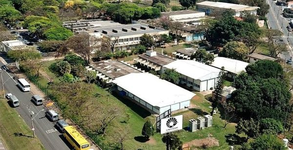

Bem-vindo(a)!
Este é o site da disciplina SI401 – Programação para a Web, oferecida pela Faculdade de Tecnologia da Unicamp, em Limeira. Aqui você encontra as principais informações sobre a disciplina: ementa, objetivos, conteúdo programático, critérios de avaliação e referências bibliográficas.
Ao longo do semestre, estudaremos como a web funciona e como construir páginas e aplicações web, desde documentos estáticos em HTML e CSS até páginas dinâmicas com JavaScript (no navegador) e PHP (no servidor).

Faculdade de Tecnologia da Unicamp – Limeira (SP).
Informações Gerais
| Código / Turma | SI401 – Turma B |
|---|---|
| Semestre | 2º semestre de 2026 |
| Horário | Segundas-feiras, das 14:00 às 18:00 |
| Sala | LP03 (laboratório de informática) |
| Professor | Guilherme Palermo Coelho (gpcoelho@unicamp.br) |
| PED | Felipe Marchi (f196695@dac.unicamp.br) |
| Carga horária | 60 horas (15 semanas) |
| Pré-requisito | SI300 – Programação Orientada a Objetos I |
| Frequência mínima | 75% |
Ementa
Elaboração de páginas web. Linguagens de marcação. Folhas de estilo. Javascript. Uso de linguagens de programação para geração dinâmica de páginas web. Uso de servidores web para armazenamento de sites. Atividades práticas de implementação de sistemas baseados nessas linguagens.
Atendimento aos Alunos
Reuniões com o professor devem ser agendadas previamente por e-mail. O horário será definido de forma a atender as agendas do aluno e do professor. Coloque [SI401] no início do campo “Assunto” e se identifique na mensagem.